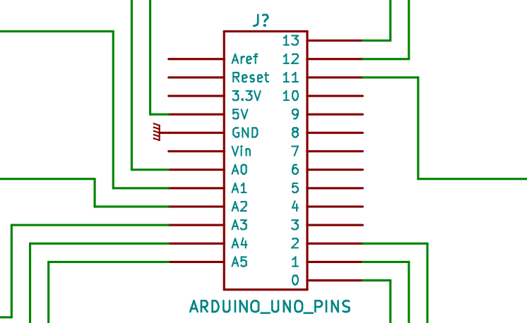

Le Solaire Thermique
Plan
Nous ne travaillons plus sur le solaire thermique.
Nous travaillons sur les poêles de masse exclusivement. Nous continuons à mener des recherches sur la production d'eau chaude, mais par les biais des poêles de masse. Articles et plans prochainement. En attendant, le plan du modèle le plus au point est disponible sur le lien suivant : https://www.outils-autonomie.fr/outils/chauffe-eau-à-bois/.
Cette page est une compilation des différentes pages qui étaient sur le site et que nous avons réunis ici à des fins d'archivages.
Pourquoi le solaire thermique ?
Les Systèmes Solaires Thermiques (SST) ont beaucoup d'atouts :
- ils répondent à un besoin vital sous nos latitude : le chauffage ;
- ils sont assez simples pour être auto-construits et entretenus par leur utilisateurs ;
- ils récupérent une énergie gratuite, abondante, non-polluante et pourtant sous-utilisée ;
- ils utilisent des matériaux basiques (verre, métal, isolant, peinture) voire même des matériaux de récupération ;
- ils restent relativement peu chers en auto-construction (2000 à 10 000€) par rapport aux énergies produites (jusqu'à 20 MWh)[1].
Nos actions
- Pour arriver à ce constat, nous avons commencé par comprendre le principe de fonctionnement et les techniques de construction utilisés par les SST actuels. Un résumé de ce travail est donné dans l'onglet "Les SST".
- Nous avons ensuite essayé de comprendre l'état et l'évolution de la filière solaire thermique en France et par rapport au reste de l'Europe. Beaucoup d'interrogations s'enchaînent :
- Comment a évolué l'utilisation des SST ces dernières années ?
- Pourquoi la filière est-elle si peu reconnue, au point qu'on confond régulièrement solaire photovoltaïque et solaire thermique ?
- Pourquoi l' ADEME (2015) dans son rapport "Vers un mix électrique 100% renouvelable en 2050", ne mentionne pas les SST ?
- Il est apparu que les SST actuels sont basés sur des régulations et des logiciels de dimensionnement trop coûteux par rapport à la situation économique de ceux qui souffrent du froid (ADEME, 2013 p. 46). Nous avons donc décidé de construire une régulation open-source, dont une notice explicative est donnée dans l'onglet "Le Solarduino".
- Nous sommes aussi entrain de créer un logiciel de dimensionnement gratuit et open-source. Un résumé du travail en cours est donné dans l'onglet "Un logiciel de dimensionnement".
Notes
- Pour avoir une idée des énergies en jeu, voir ici la comparaison temps de travail humain vs. kWh de Jean-Marc Jancovici.
Références
Les Systèmes Solaires Thermiques
Plan
Introduction
Les capteurs solaires thermiques, récupèrent l'énergie du soleil et la transforment en chaleur. Il ne faut pas les confondre avec les panneaux solaires photovoltaïques qui récupèrent aussi l'énergie du soleil, mais pour la convertir en électricité. L'énergie récupérée par les capteurs permet de produire de l'eau chaude sanitaire ou de chauffer une maison, généralement grâce à un plancher solaire direct (PSD).
Plusieurs arguments sont en faveur de l'utilisation des panneaux solaires thermiques :
- il est possible de réaliser un système solaire thermique (SST) efficace avec des matériaux courants et une technologie simple ;
- L'énergie solaire est à la fois abondante, renouvelable, gratuite et sous-utilisée (GIEC, 2012) ;
- Un SST bien réalisé pourra fonctionner plusieurs dizaines d'années.
- La conception du système demande un minimum de réflexion pour éviter les surchauffes d'été et donc la détérioration prématurée du système;
- Dans la grande majorité des cas, les SST doivent être couplés à un chauffage d'appoint classique (électricité, fioul, gaz, bois..) pour répondre aux besoins hivernaux;
Le principe
Le rayonnement du soleil est converti en chaleur par un capteur de couleur sombre. Celui-ci transmet cette chaleur à un fluide caloporteur qui, à son tour, la transmet à de l'eau sanitaire pour la chauffer. C'est un principe simple et facile à mettre en oeuvre : il suffit de laisser au soleil un fût peint en noir et rempli d'eau pour constater que la température de l'eau qu'il contient augmente. Les premières expériences en université sur ce type de système datent de la fin des années 1930.

À gauche, réclame pour le premier capteur solaire commercial (1891); à droite, un expérience de F.A. Brooks au centre d'expérience agricole de l'université de Californie (1936). Source : Bainbridge (1981).
Les composants principaux
Le capteur
C'est un caisson isolé avec une face vitrée pour laisser passer le rayonnement solaire. Dans ce caisson se trouve un absorbeur metallique peint d'une couleur sombre. Ainsi, l'absorbeur est chauffé par le rayonnement solaire et la chaleur produite se trouve piégée et s'accumule dans le caisson : c'est l'effet de serre (Wood, 1909).
Les circuits primaire et secondaire
Cette chaleur accumulée est transmise à un fluide caloporteur, c'est-à-dire un fluide qui permet de transporter l'énergie, qui circule dans une série de tubes appelée le circuit primaire. Celui-ci permet d'amener la chaleur jusqu'à un réservoir de stockage d’eau dédiée à la production d'eau chaude sanitaire (avec un cumulus, par exemple) ou au chauffage de l'habitat (des radiateurs muraux ou un plancher chauffant, par exemple).
Si la chaleur produite sert à chauffer de l'eau chaude sanitaire (dans le circuit secondaire), alors le fluide caloporteur en est séparé (il reste dans le circuit primaire). En effet, sous les climats tempérés, on répond au risque de gel en ajoutant un liquide antigel dans le circuit primaire : du mono-propylène-glycol, comme dans le circuit de refroidissement des voitures.
Le stockage
l'énergie solaire est une ressource intermittente : elle dépend de la météo, de l'heure du jour et de la saison. Il faut donc pouvoir accumuler cette énergie pour l'utiliser plus tard. C'est le rôle des composants de stockage : les cumulus et les PSD.

À gauche, schéma d'un SST classique; à droite, schéma d'un capteur plan. Source : GIEC (2012 p. 337).
Références
- GIEC, 2012, p. 337. Renewable Energy Sources and Climate Change Mitigation: Special Report of the IPCC. Disponible ici. "Solar energy is the most abundant of all energy resources. Indeed, the rate at which solar energy is intercepted by the Earth is about 10,000 times greater than the rate at which humankind consumes energy."
- David A. Bainbridge, 1981. The Integral Passive Solar Water Heater Book.
- R.W. Wood, 1909. Note on the Theory of the Greenhouse. Disponible ici.
Un état des lieux
Plan
Un état des lieux de la filière
Un enjeu de taille dans un contexte fragile
La maîtrise des moyens de chauffage est un enjeu très important si l'on réalise que les trois quarts de l'énergie utilisée par les ménages français dans leur résidence est utilisée pour le chauffage et l'eau chaude sanitaire (ADEME, 2013 p. 42).
D'autre part, la très grande majorité de l'énergie nécessaire au chauffage provient de sources d'énergies à la fois épuisables (voir la figure ci-dessous) et, qui plus est, importées. Le taux d'indépendance énergétique de la France est d'environ 50%, mais ce taux est en fait surestimé parce qu'il ne prend pas en compte que l'ensemble du combustible nucléaire est importé (Connaissance des Énergies, 2012). Ceci rend l'espoir d'un prix constant complètement illusoire [1].


À gauche, consommation d'énergie finale dans l’ensemble du secteur résidentiel à climat normal; à droite, évolution du taux d'indépendance énergétique de la France. Source : (ADEME, 2013 p. 13 et 40)
À cela s'ajoute un contexte social où "5,4 millions de français ont déclaré souffrir du froid du fait d’un système de chauffage insuffisant, d’une mauvaise isolation ou de contraintes financières" (ADEME, 2013 p. 46).
Ces trois arguments montrent l'importance de l'enjeu énergétique et plèdent en faveur de sources d'énergies locales et non épuisables, comme l'énergie solaire. Voyons maintenant l'état actuel du développement de la filière.
Un potentiel sous-exploité..
Le potentiel solaire est exploité de manière très différente entre les pays européens. Par exemple, la France reçoit en moyenne à peu près autant d'énergie solaire par unité de surface que l'Autriche (graphique de droite) alors qu'il y a environ 14 fois plus de capteurs solaires thermiques par habitant en Autriche ! Il y a donc beaucoup à faire dans quasiment tous les pays européens.
-
Figures[2] : Surfaces de parcs solaires thermiques en service par habitant en 2014. Une couleur plus sombre correspond à une surface plus importante.Données initiales : EurObservER (2015).
-
Irradiation solaire moyenne annuelle par m2. Une couleur plus sombre correspond à une irradiation plus importante. Données initiales : Šúri M. et al (2007).
Les causes ? D'après l'organisme européen d'observation des énergies renouvelables EurObserv'ER (2015 p. 12), quatres causes principales, donc trois purement politiques, doivent être remarquées :
- "Le marché a particulièrement pâti ces dernières années des politiques de “stop-and-go” en matière d’aides à l’investissement. [...]"
- "La filière solaire thermique souffre également de la concurrence de technologies alternatives (ballons d’eau chaude thermodynamiques, chaudières gaz à condensation, etc.) qui bénéficient également d’incitations et dont les coûts d’installation sont plus faibles. [...]"
- "Autre raison, la filière solaire thermique souffre depuis plusieurs années d’un déficit de communication, d’absence de mise en œuvre de campagnes institutionnelles menées au niveau national. [...]"
- "Enfin, la forte baisse du prix du pétrole et du gaz en 2014 et également durant le premier semestre 2015 n’a pas incité les propriétaires de maisons à opter pour un investissement solaire thermique. [...]"
En France par exemple, depuis 2008, il s'est installé de moins en moins de capteurs solaires chaque année. Le graphique ci-dessous, a été réalisé par Uniclima, le syndicat français des industries thermiques, aérauliques et frigorifiques, qui représente le trois quarts des professionnels du secteur :
-
Évaluation du marché français des capteurs solaires thermiques (en m2) Source : Uniclima (2014 p. 8).
Pierre Amet, président de l'APPER (Association de Promotion des Énergies Renouvelables), relève en outre un problème de formation des installateurs qui les conduit à privilégier les solutions "plug-and-play" peu rentables :
Il ressort donc que les principales contraintes au développement de la filière solaire thermique sont politiques. Mais si, politiquement, le solaire thermique n'a pas "le vent en poupe", ce n'est pas à cause de ses qualités techniques. C'est ce que nous allons voir dans la partie suivante."Actuellement en France, on installe surtout du solaire thermique pour l'ECS (Eau Chaude Sanitaire solaire) parce qu'il est plus facile d'installer un CESI (Chauffe-Eau Solaire Individuel) : les fabricants proposent des kits tous prêts qui ne nécessitent pas de la part des installateurs des compétences très importantes. Le chauffage solaire, qui est beaucoup plus rentable, nécessite par contre des compétences multiples (dimensionnement, gestion de la surchauffe estivale, adaptation à l'installation existante...) et actuellement en France nous n'avons pas encore d'outils vraiment performants pour la formation des installateurs (la formation Qualisol Chauffage Solaire ne dure que quelques jours)." (Amet, n.d.)
..malgré des avantages indéniables
Au delà des sources d'énergies locales, il faut aussi que les technologies qui nous permettent d'exploiter ces énergies ne soient pas dépendantes de matériaux ou de compétences importés. Les systèmes solaires thermiques utilisant des capteurs plans correspondent à la technologie solaire qui répond le mieux à ces critères. À titre de comparaison, le solaire photovoltaïque est majoritairement produit en Chine et sa fabrication nécessite une industrie lourde et, pour une partie des capteurs produits, des matériaux rares et présents eux aussi en Chine : les terres rares (Gaillard, 2011).
Le solaire thermique est, en comparaison, très simple à fabriquer. En témoigne les nombreuses instructions disponibles sur l'auto-construction de capteurs[3]. C'est cette simplicité qui fait sa robustesse : les systèmes sont constructibles et réparables par les particuliers qui s'en servent en utilisant des matériaux "basiques" (tuyaux de cuivre ou d'acier, plaques de métal ou d'aluminium, isolants, peinture) ou des matériaux de récupération.

Des capteurs solaires thermiques et un cumulus auto-construits.
Dernier argument : celui du coût. Au delà de la dépense initiale, il faut toujours prendre en compte les frais qui viendront s'ajouter par la suite lors de l'utilisation et de la fin de vie du système. À l'heure actuelle, le meilleur moyen de diminuer le coût initial consiste à auto-installer et/ou auto-construire son système solaire thermique. L'APPER fait part de ce constat :
Pour le coût global, la conclusion reste identique à condition que les utilisateurs soient formés aux problématiques et à l'entretien de leur système solaire thermique : c'est justement la possibilité offerte par l'auto-construction et l'auto-installation."Coût d’une installation de chauffage solaire ou combiné individuel: 20 à 40.000 € hors aides, et approximativement de 15.000 à 25.000 € aides déduites (installation réalisée par un professionnel compétent). Ce budget est trop important pour un grand nombre. Depuis plusieurs années, notre association [...] fait la promotion des systèmes solaires thermiques (chauffage, chauffe-eau) auto-construits et auto-installés. Avec notre groupement d’achat, l'installation d'un système solaire combiné (chauffage + eau chaude) en auto-installation, ne dépasse pas 8.000 à 10.000€. [...] Ce budget est de beaucoup inférieur au précédent, et l’auto-installateur ne fait en rien concurrence aux professionnels. Si on n’a que 8.000 à 10.000€ de budget, on ne peut en aucun cas profiter de leurs compétences." (APPER, n.d.)
Vers l'auto-construction et l'auto-installation ?
L'APPER, dans son livre (Amet et al, 2008), donne plusieurs exemples d'installations de SST utilisés à la fois pour la production d'eau chaude sanitaire et pour le chauffage. Les données sont réunies ici sous forme de tableau[4] :
| Numéro de l'installation | Coût de l'installation | Consommation énergétique annuelle antérieure | Économie d’énergie annuelle réalisée | Part d'énergie économisée | Économie annuelle financière | Durée de retour sur investissement |
|---|---|---|---|---|---|---|
| 1 | 6 800 € | 29 000 kWh | 12 000 kWh | 41 % | 2 500 € | 7 ans |
| 2 | 7 600 € | 36 360 kWh | 11 000 kWh | 49 % | 950 € | 8 ans |
| 3 | 2 500 € | 36 000 kWh | 19 000 kWh | 51 % | 1 800 € | 1,2 ans |
Ces exemples montrent qu'il est possible d'économiser une part importante de sa consommation énergétique sans que les coûts d'installation deviennent prohibitifs.
Plus encore, l'auto-construction et l'auto-installation forment les utilisateurs, ce qui les rend moins susceptibles d'utiliser des matériaux de mauvaise qualité, d'endommager le système ou de devoir faire appel à un spécialiste pour l'entretien du système. C'est donc aussi le coût global qui se trouve réduit.
Dernier argument, les budgets sont complètement différents entre une auto-installation et une installation par un professionnel. Il n'y a donc pas de compétition entre les deux secteurs, comme le souligne l'APPER :
"Ce budget [celui de l'auto-installation] est de beaucoup inférieur au précédent [celui de l'installation par un artisan], et l’auto-installateur ne fait en rien concurrence aux professionnels. Si on n’a que 8.000 à 10.000€ de budget, on ne peut en aucun cas profiter de leurs compétences." (Développer la filière solaire thermique: constats et propositions de l'APPER., n.d.)
Conclusion
Comme nous l'avons vu, les systèmes solaires thermiques possèdent des atouts techniques et environnementaux indéniables. Si la filière est aussi peu développée, c'est avant tout un problème politique, puisque les incitations sont instables [5], qu'elles bénéficient aussi à des technologies utilisant des métaux rares ou des combustibles non renouvelables et, qu'en outre, les formations mises en place ne sont pas suffisantes.
L'auto-construction et l'auto-installation répondent en partie à ces problématiques puisqu'elles permettent de réduire les coûts d'installation, ce qui les rend compétitives même par rapport à une installation réalisée par un professionnel et subventionnée. D'autre part, les formations peuvent être dispensées par un réseau d'acteurs locaux, comme c'est déjà le cas.
Notes
- Il faut se rappeler du premier choc pétrolier des années 1970 et de la manière dont varie, encore aujourd'hui, le prix du pétrole.
- Ces graphiques ont été réalisés avec https://datamaps.github.io/.
- Beaucoup d'exemples peuvent notamment être trouvés sur le site de l'APPER : ici, ici et ici par exemple.
- Données arrondies et en considérant que 1L de fioul produit 10 kWh d'énergie. En considérant que les consommation, l'économie, le prix du fioul (0,86 €/L) et le prix de l'électricité (14 cts/kWh) restent constants.
- D'autant qu'il n'est pas possible en France d'obtenir des aides pour une auto-installation, alors que c'est le cas dans d'autres pays.
Références
- ADEME, 2013. Chiffres clés du bâtiment. Disponible ici.
- Connaissance des Énergies, 2012. Comment est calculée l’indépendance énergétique de la France ?, disponible ici.
- EurObservER, 2015. Baromètre solaire thermodynamique et solaire thermique, p. 17. Données disponibles ici.
- Šúri M., Huld T.A., Dunlop E.D. Ossenbrink H.A., 2007. Potential of solar electricity generation in the European Union member states and candidate countries. Solar Energy, 81, 1295–1305. Données disponibles ici.
- Uniclima, 2014. Bilan 2013 et perspectives 2014 du génie climatique, p. 8. Disponible ici.
- Amet P. L'éditorial du président de l'Apper. Disponible ici.
- Frédéric Gaillard, 2011. Le soleil en face, p. 94-98.
- APPER. Développer la filière solaire thermique: constats et propositions de l'Apper. Disponible ici.
- P. Amet, G. Gourdon, Y. Guern, R. Jules, E. Marguet, F. Mykieta, 2008. Installer un chauffage ou un chauffe-eau solaire, p. 65 à 136. Éditions Eyrolles. Disponible ici.
Le Solarduino : une régulation open-source
À quoi sert une régulation ?
Le régulateur est indispensable. Sans lui, le circulateur fonctionnerait en permanence. C'est-à-dire que la chaleur accumulée dans le ballon de stockage serait dissipée dans les capteurs durant la nuit où pendant un épisode nuageux.
-
Figure : Schéma d'un SST controlé par une régulation.
Le régulateur doit enclencher le fonctionnement du circulateur lorsque la différence de température entre le fluide en sortie du champ de capteurs et l'eau dans le ballon de stockage est suffisante pour qu'il y ait un échange thermique efficace (en général, on prend une différence de température égale à 10°C), d'où le nom de régulation différentielle. Il faut aussi que le régulateur prenne en compte un hystérésis (c'est-à-dire qu'il attend que la température diminue jusqu'à 5°C environ avant de relancer le circulateur) pour que le circulateur ne soit pas arrêté et remis en marche trop souvent.
Au delà de ce principe de base, une régulation doit prendre en compte plusieurs autres paramètres, surtout lorsque le système se complexifie : plusieurs champs de capteurs, plusieurs cumulus, des planchers solaires directs, etc..
Le Solarduino

Figure : premier prototype du Solarduino soudé sur une plaque à pastilles.
Nous avons développé une régulation open-source, peu coûteuse qui permet de remplacer les régulations propriétaires du commerce : le Solarduino. Basée sur le travail de Bioulez (2012), elle se place en complément d'une autre régulation open-source créée par Nies (2009) : le Minisun.
Voici un tableau comparant le Solarduino à une partie des régulations existantes. Les prix prennent en compte deux sondes de température et sont basés sur le groupement d'achat de l'APPER, disponible ici.
| Nom | Coût | Nb. de sondes | Nb. de relais | Régulation d'une chaudièreexterne | Program-mable | Open-Source | Référence |
|---|---|---|---|---|---|---|---|
| MINISUN | 45 € | 2 | 1 | non | non | oui | lien |
| SOLARDUINO | 85 € | 6 | 6 | oui | oui | oui | ce site |
| PICO 400 | 90 € | 2 | 1 | non | non | non | lien |
| BASIC | 130 € | 2 | 1 | non | non | non | lien |
| VISION+ | 215 € | 6 | 3 | oui | non | non | lien |
| GENIUS+ | 385 € | 9 | 6 | oui | oui | non | lien |
| MILLENIUM3 | 625 € | 12 | 8 | oui | oui | non | voir note [1] |
Le schéma
Voici le schéma électronique du Solarduino. Il y a quatre parties distinctes dans le système :
- L'alimentation permet de fournir une tension stable aux trois autres parties. Elle fournit deux tensions : 12 Vcc (volts en courant continu) et 5 Vcc.
- L'interface des sondes permet d'utiliser des sondes de température classiques : des KTY81-210. Ces sondes sont des compsants dont la résistance varie avec la température. Plus il fait chaud, plus leur résistance augmente. En la mesurant, on peut donc connaitre la température du milieu dans lequel les sondes sont positionnées.
- La commande des relais permet d'utiliser des.. relais. Les relais sont des interrupteur commandables. Lorsque l'arduino donne l'ordre de mettre en route un circulateur ou de modifier la position d'une vanne trois voies, l'un des relais ferme le circuit correspondant.
- L'arduino est un microcontrolleur open-source. Ses plans de fabrication sont disponibles ici. Son principe de fonctionnement est le suivant : on commence par le brancher à un ordinateur. À partir de cet ordinateur, on lui transfère un code. On débranche ensuite l'arduino pour le mettre en place. Une fois allumé, l'arduino exécute en boucle le code qui a été transféré. On peut ainsi lui faire exécuter des taches complexes à notre place.
Les choix constructifs
L'alimentation

Calcul et choix des composants :
- Le fusible et la varistance : Le circuit est protégé des sur-intensités grâce au fusible et la varistance le protège des sur-tensions. Il faut choisir un fusible de type rapide pour qu'il grille avant le reste du circuit en cas de sur-intensité.
- Le transformateur : Il a été choisi pour obtenir du \(15 Vca\) soit, en amplitude \(15\sqrt{2}V\) . En effet, le régulateur de tension à besoin d'une tension supérieure à sa tension de régulation pour pouvoir fonctionner correctement. Les données constructeur indiquent \(V_{min}=14.5V\) . Ensuite, le pont de diode redresse le signal de sorte qu'il double sa fréquence \(f=50Hz\) et les diodes provoquent une chute de tension de \(1.4V\) . L'amplitude maximale du signal arrivant aux bornes du condensateur vaut donc \(V_{in}=15\sqrt{2}-1.4\)
- La capacité réservoir : pour que la tension aux bornes du régulateur ne diminue pas en dessous de \(V_{min}\) , il faut choisir la capacitance \(C_{1}\) telle que : \(C_{1}=I_{max}/2f(V_{in}-V_{min})\) soit \(C_{1}=700\mu F\) . En pratique, le condensateur choisi est de type électrolytique et possède une capacitance de \(1000\mu F\) pouvant fonctionner jusqu'à 50 Vcc.
- Le régulateur de tension 12 Vcc : le régulateur choisi est de type L7812CV parce qu'il supporte des courant allant jusqu'à 1.5 A, ce qui suffit largement ici.
- Contrairement à la solution de Bioulez (2013), il a été choisi de ne pas utiliser un régulateur de tension 9 Vcc, mais de mettre à la place un régulateur 5 Vcc et d'alimenter directement l'arduino sans passer par son régulateur interne. En effet, le courant maximal consommé par l'arduino est de \(I_{max}=60mA\) donc la puissance d'échauffement vaut \(P_{\acute{e}chauff}=(9-5)*I_{max}\) soit \(P_{\acute{e}chauff}=420mW\) . Or, d'après les données constructeur, la résistance thermique du régulateur interne de l'arduino vaut 160 °C/W donc celui ci s'échauffera de 21°C. C'est acceptable pour une carte de prototypage, mais dans l'optique de créer une carte robuste, il vaut mieux limiter l'échauffement des composants. De plus, ce changement ne rajoute aucun surcoût.
- Les condensateurs de filtrage : les données constructeur indiquent l'utilisation d'un condensateur de capacitance \(C_{3}=0.1\mu F\) pour lisser les oscillation en sortie du régulateur. Un condensateur \(C_{2}=100\mu F\) a aussi été rajouté en entrée pour atténuer les fluctuations liées aux relais.
L'interface des sondes

Calcul et choix des composants :
- Les sondes : on utilise des sondes de type KTY81-210 parce qu'elles ont une bonne sensiblilité aux variations de température. Les données constructeur indiquent qu'elles sont utilisables entre -55°C et 150°C et qu'entre ces deux valeurs leur résistance varie entre \(980\Omega\) et \(4280\Omega\)
- Le condensateur \(C_{i}\) : il permet de réaliser un filtre passe-bas avec la résistance \(R_{3}\). La constante de temps de ce filtre vaut \(\tau=R_{i}C_{i}=0.024s\) soit une fréquence de coupure égale à \(f_{c}=\tfrac{1}{2\pi R_{i} C_{i}}=6.6 Hz\). Ainsi, toutes les fréquences supérieures à \(f_{c}\) seront atténuées.
- La résistance \(R_{i}\) : Celle-ci permet de réaliser un pont diviseur de tension tel que la tension mesurée par l'arduino \(V_{analog}\) corresponde à \(V_{analog}=\frac{R_{sonde}}{R_{sonde}+R_{i}}\), d'où \(V_{analog} \in [1.45 ; 3.20 V]\) pour \(R_{i}=2,4k\Omega\). On obtient ainsi une plage de variation de 1,75V. Les ports de mesure de l'arduino acceptent des tensions entre 0 et 5 Vcc qu'ils transforment en 1024 points (10 bits). Ainsi, les 205 °C de variation permises par les sondes sont codées sur 358 bits, d'où une précision de 0,6°C/bit.
La commande des relais

Calcul et choix des composants :
- Les relais : ce sont des interrupteurs commandés. On utilise des relais Finder de type 40.61 parce qu'ils sont commandables en 12 Vcc et qu'on peut les utiliser dans un circuit de puissance sous 230 Vca et 16A. C'est très largement suffisant pour controler le fonctionnement d'un circulateur ou d'une vanne 3 voies. Ils possèdent une résistance interne de \(R_{relais} = 220\Omega\) et demandent une puissance minimale de 500 mW pour être commandés.
- Le transistor et la résistance \(R_{i}\) : d'après les données constructeur, les sorties de l'arduino peuvent fournir \(I_{max} = 40 mA\) sous 5 V, soit 200 mW de puissance. Il est donc impossible pour ces sortie de commander un relais sans être amplifiées. Un transistor peut être utilisé pour amplifier la puissance de ces sorties. Si on note \(I_{c}\) le courant circulant entre le collecteur et l'émetteur du transistor et \(V_{relais}\) la tension d'alimentation des relais, il faut choisir un transistor capable de supporter un courant \(I_{c} = \frac{V_{relais}}{R_{relais}} = 55 mA\). Si on note \(V_{ceo}\) la tension maximale supportée par le transistor, il faut que \(V_{ceo} \gg V_{relais}\). Si on note \(I_{arduino}\) la tension en sortie de l'arduino et \(h_{fe}\) le gain en courant du transistor tel que \(I_{c}=h_{fe} I_{arduino}\), il faut que \(I_{arduino} = \frac{I_c}{h_{fe}} \leq I_{max}\). En choisissant \(R_{i} = 20 k\Omega\) et un transistor de type BC547C, on obtient \(I_{c_{max}} = 100 mA\), \(V_{ceo} = 45V\), \(h_{fe}=220\) et \(I_{arduino} = 0,25 mA\). Donc tout est OK.
- Diodes : on fait passer un courant \(I_{c}\) dans la bobine tel que \(V_{L}=-L \frac{dI_{c} }{dt} \). Ainsi, une variation brusque de \(I_{c}\) créera une tension importante aux bornes de la bobine. Cette tension risque de dépasser \(V_{ceo}\) et de détruire le transistor. C'est pourquoi on ajoute une diode pour protéger le transistor. On choisit une diode de type 1N4007 parce que c'est un composant classique, facile à trouver, qui supporte jusqu'à 1000 V de tension.
L'arduino
- 
Le microcontrolleur utilisé est un arduino Uno, dont les caractéristiques sont disponibles ici. Peu cher, open-source, robuste, il permet d'interfacer 6 sondes de température et de commander 14 relais. D'autres versions, comme l'arduino Mega2560 permettent d'interfacer plus de sondes et de commander plus de relais.
Notes
- Un API MILLENIUM 3 avec 12 entrées et 8 sorties coûte 235€ ; le cable d'interfaçage 105€ ; le logiciel 70€ ; les convertisseurs pour sondes de température 100€ ($110) l'unité.
Références
Un logiciel de dimensionnement
À quoi sert un logiciel de dimensionnement ?
En résumé, un logiciel de dimensionnement permet de créer des systèmes solaires thermiques adaptés au lieu et à la consommation des occupants. Ces systèmes ne surchaufferont pas et dureront bien plus longtemps que s'il n'y avait pas eu de dimensionnement correct.
La ressource solaire n'est pas commandable. Malheureusement, elle ne coincide pas avec les besoins d'eau chaude et de chauffage. En effet, c'est en hiver que les besoins énergétiques sont les plus grands alors que c'est aussi à ce moment que l'influx solaire est le plus faible. Et c'est l'inverse en été.
Le danger est de surchauffer l'installation en été, ce qui conduirait à une détérioration du système. Dans ce cas, le fluide caloporteur (glycol) perd ses propriétés anti-gel ; les fluides se dilatent dans le circuit primaire comme dans le circuit secondaire, ce qui entraine la rupture de la tuyauterie ; la colle de l'isolant des capteurs (souvent laine de roche ou de verre) se gazeïfie et vient former un voile opaque sur la vitre du capteur ; etc.
Ceci a conduit les installateurs à mettre en place différentes stratégies :
- incliner fortement les capteurs (entre 60 et 90° par rapport à l'horizontale)
- mettre en place des masques permanents (débord de toit) ou temporaires (bâches, volets) pour occulter les capteurs en été ;
- créer un circuit de décharge dans le sol au Nord d'un bâtiment et mettre en place une régulation adaptée
Pourquoi un logiciel gratuit et open-source ?
Les logiciels actuels du commerce sont inadaptés à l'auto-construction. Les licences sont trop chères par rapport au coût de revient d'une installation classique[1]. Ces solutions seraient adaptées à un artisan installateur
de systèmes solaires thermiques, puisqu'il pourrait rentabiliser le coût d'achat de la license sur plusieurs installations.
En revanche, ce n'est pas une solution envisageable pour les auto-constructeurs et le auto-installateurs.
D'autre part, il ne s'agit pas d'un manque à gagner pour l'association puisqu'elle se rémunère sur les stages de formation. Ce sont eux qui lui permettent d'être viable. Le but de l'association n'est pas le profit, mais le développement des
technologies appropriées.
L'open-source permet la collaboration effective de différents acteurs autour d'un projet. Le code est disponible et modifiable par les utilisateurs du logiciel. C'est une démarche à la fois éducative et collaborative.
Il faut aussi réaliser qu'une grande part du travail de développement d'un logiciel, ou d'un outil, consiste à réutiliser le travail effectué et mis à disposition par d'autres (voir la partie suivante pour s'en rendre compte). En ce sens,
mettre à son tour son travail à disposition des autres n'est qu'un juste retour des choses : prendre d'un côté, et donner de l'autre.
La démarche de développement
La première étape consiste à identifier les fonctionnalités voulues du logiciel. Ici, on souhaite trois choses :
- Connaître la température journalière maximale des capteurs ;
- Connaître le ratio solaire de l'installation ;
- Éditer des masques solaires

Reste maintenant à traiter chacun de ces problèmes :
- Comment connaître la position du soleil à chaque instant et pour une position géographique donnée ?
- Comment connaître l'irradiance solaire atténuée par l'atmosphère et arrivant sur une surface au sol ?
- Comment connaître la température de l'ensemble capteurs + stockage en fonction de la puissance arrivant sur les capteurs ?
Entrée(s) : date ; latitude Sortie(s) : position du soleil (inclinaison, azimuth) Description : la solution théorique à ce problème est donnée par Reda et Andreas (2008). Elle a été implémentée en python par Stafford et al (2015).
Entrée(s) : position du soleil (inclinaison, azimuth) ; altitude du système ; orientation des capteurs (angle, inclinaison) ; surface des capteurs ; position des masques Sortie(s) : puissance instantanée reçue par les capteurs en fonction du temps Description :la solution théorique à ce problème est donnée par Bishop et al (1997). Elle a aussi été implémentée en python par Stafford et al (2015). Reste à calculer l'influence de l'orientation des capteurs (angle, inclinaison) sur la puissance reçue.
Entrée(s) : puissance instantanée reçue par les capteurs en fonction du temps ; température externe ; température de l'eau ; caractéristiques des capteurs, de la tuyauterie et du stockage ; données de consommation du foyer Sortie(s) : température de l'ensemble capteurs + stockage en fonction du temps pour chaque jour de l'année Description : la solution théorique de ce problème pour des capteurs de type plan est donnée par Saleh (2012). Reste à l'implémenter.
Notes
- Une license du logiciel de dimensionnement Polysun coûte par exemple 1599 €. Voir ici.
Références
- I. Reda et A. Andreas, 2005. Solar Position Algorithm for Solar Radiation Applications National Renewable Energy Laboratory, NREL/TP-560-34302. Disponible ici.
- Stafford et al, 2015. Pysolar: staring directly at the sun since 2007. Mode d'emploi disponible ici et code disponible là.
- J. K. B. Bishop, W. B. Rossow, et E. G. Dutton, 1997. Surface solar irradiance from the International Satellite Cloud Climatology Project 1983-1991, Journal of Geophysical Research, vol. 102, no. D6, March 27, 1997, pp. 6883-6910. Disponible ici.
- Ahmad M. Saleh, 2012. Modeling of flat-plate solar collector operation in transient state. Disponible ici.